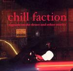

| Artist: | Chill Faction |
| Title: | Eggman On The Deuce And Other Stories |
| Label: | Faith Strange fs5 |
| Length(s): | 78 minutes |
| Year(s) of release: | 1987/2004 |
| Month of review: | [05/2005] |
| 1) | Down By The Waterfront | 4.06 |
| 2) | The Affairs Of The Heart | 4.03 |
| 3) | (You Send Me Like So Many) Nuclear Missiles | 6.59 |
| 4) | Sweet & Sour Sadness Of Sunday Afternoons | 4.53 |
| 5) | Hell Without You | 4.46 |
| 6) | Don't Fall In The Crack, Jack | 4.26 |
| 7) | 42nd Street | 4.49 |
| 8) | I Am The Walrus | 4.20 |
| 9) | Whenever We're Together | 4.43 |
| 10) | Marilyn | 5.08 |
| 11) | Dance | 5.31 |
| 12) | Long Hot Summer | 4.52 |
| 13) | Hostage Of The Heart | 5.42 |
| 14) | Christmas In The Whorehouse | 6.31 |
| 15) | Bride Of Jesus | 6.20 |
We hear slappy and roaring basses and over the top vocals. Kirwan's timbre is definitely different from most, it's sort of halfway between the singer for Cast of Thousands and Martyn Bates. Apart from that, he appears to attempt to twist it at least once a word. And the odd trombone sound, meandering around the melody. The melodies have a certain tendency to sound disjoint. Stylistically the music is pretty much vogue (the style popularized by Duran Duran), sort of later day wave. The sound is somewhere in between the more avant garde side of Duran Duran and A Flock Of Seagulls, but lacks the appeal. Oddly this band appears American.
Sometimes a more experimental side of the band pop ups, although these sections still fit in within the ranges put up already. During these sections the thought of outfits like Eyeless In Gaza come to mind as well. Maybe a hint of The Cure, even.
The recording sounds (more than) a bit echoed. Part of the material were demo recordings, but there is something stylized about it sometimes too. It does give some tracks a more edgy quality, in a not so positive way.